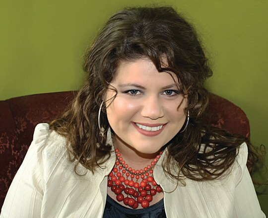

Biografia de Rainbow Rowell

Rainbow Rowell (Omaha, 24 de fevereiro de 1973) é uma autora norte-americana de livros jovens-adultos ou adulto-contemporâneo. Suas obras Eleanor & Park e Fangirl receberam muitos elogios de crítica e público em 2013.
Ela é casada
e tem dois filhos. Seus cinco livros já foram publicados no Brasil pela editora Novo Século. Em Portugal, a Edições Chá das Cinco publicou Eleanor & Park, Fangirl em 2015 e Anexos, Por um Fio em 2016.
Ocupação: Escritor
Data do Nascimento: 24/02/1973
Nacionalidade: Norte-Americano
Livros:
Eleanor & Park